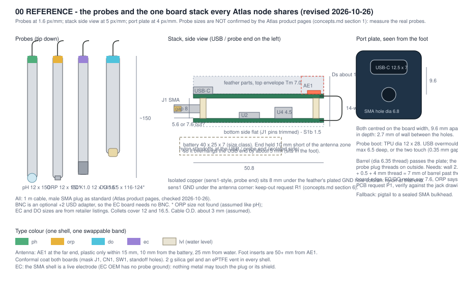
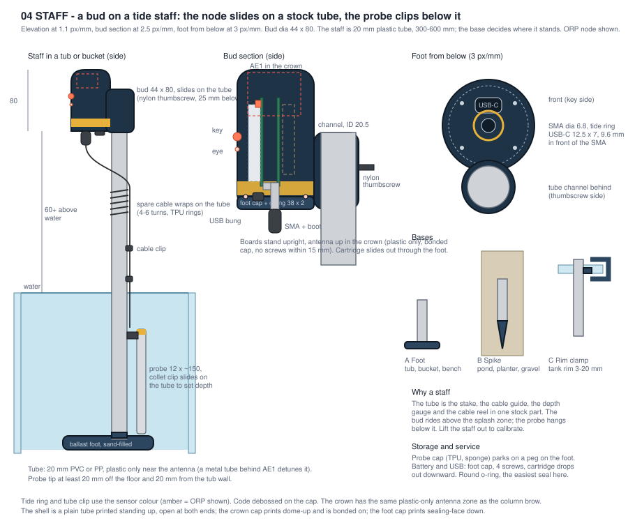
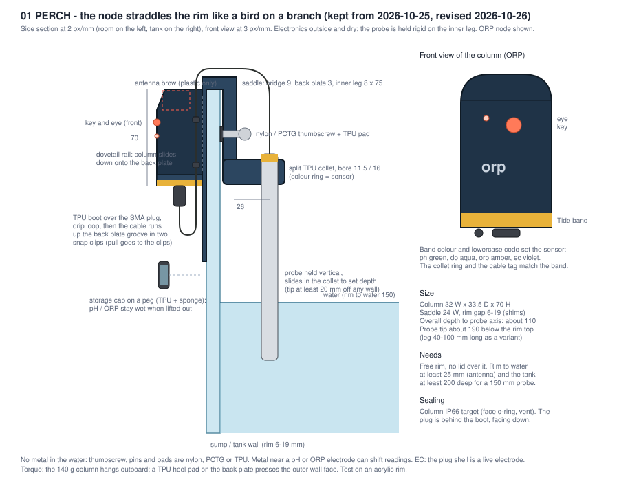
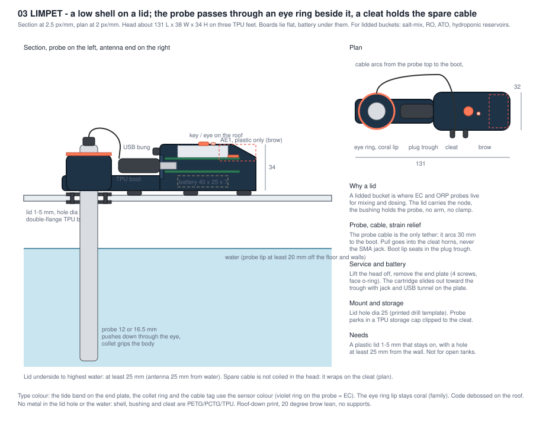
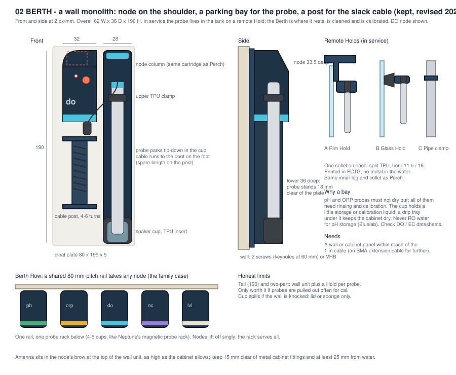
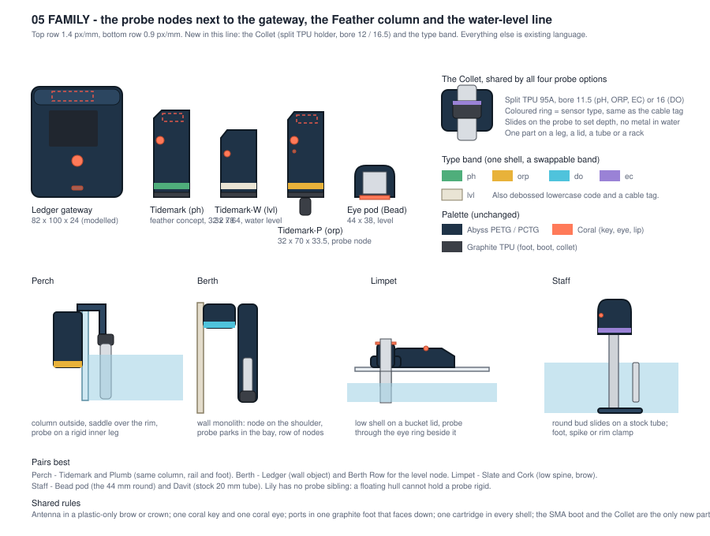

Four ways to house a battery probe node in a reef room
Concepts only, no CAD. Each node is a Feather main board plus one stacked sensor board in its own enclosure, with an Atlas probe on a 1 m cable plugged into an SMA jack on the USB end. The node stays dry, the antenna stays high and 25 mm or more from water, and one cartridge, one SMA boot and one probe holder (the Collet) serve all four options. Full text, references and questions are in concepts.md.
Atlas does not publish the probe body size on its product pages. Holders are parametric (bore 11.5 or 16 mm); the sketches assume 12 x 150 (pH, ORP, EC) and 16.5 x 120 (DO). Please measure the real probes. Also check the SMA barrel length (P1): the ORP board notes say 5.6 mm, the DO and EC boards 7.6 mm, and the foot needs about 7.
Recommendation
| # | Option | Idea | Size (mm) | Looks | Setting | Print/seal | PCB | Total |
|---|---|---|---|---|---|---|---|---|
| 1 | Staff | Round bud slides on a stock 20 mm tube; probe clips lower; foot, spike or rim clamp | bud dia 44 x 80; tube 300-600 | 4 | 4 | 4 | 5 | 17 |
| 2 | Perch | Tidemark-style column outside the wall, saddle over the rim, probe in a collet on the inner leg | column 32 x 33.5 x 70 | 4 | 4 | 4 | 5 | 17 |
| 3 | Limpet | Low shell on a bucket lid, probe through the lid in a TPU bushing, cleat for spare cable | 131 x 38 x 34 | 4 | 3 | 4 | 5 | 16 |
| 4 | Berth | Wall monolith: node, storage and calibration bay, cable post; probe on a remote Hold | 62 x 36 x 190 | 4 | 3 | 3 | 5 | 15 |
Staff first (works wherever there is water and no usable rim or lid; round o-ring seal) and Perch second (sumps and tubs with an open rim; matches the Tidemark column exactly). Limpet only for lidded buckets; Berth only if probes are pulled out for calibration often. Decision: for Staff, the round bud or the Tidemark-P column on the tube through the rail?
PCB column: 5 = no change needed. One check applies to all (P1, SMA barrel length), plus a request for 3D bodies of the jack and OEM module.
The probes, the stack and the port plate

Probes
- All three Atlas pages: 1 m cable, male SMA by default (BNC is an optional adapter).
- Body sizes unconfirmed. Storage rules for DO and EC not confirmed.
Port
- SMA dia 6.8 hole and USB-C 12.5 x 7, 9.6 mm apart, centred on the board width.
- EC: the plug shell is a live electrode, so nothing metal near the plug.
Staff
Looks 4 · Setting 4 · Print/seal 4 · PCB 5 · 17A tide staff for a probe. The bud slides on a stock tube; the probe clips below it; the spare cable wraps round the tube. The base is a sand-filled foot, a spike or a rim clamp.

Containers
- Tubs, buckets, ponds, planters, tanks with a rim clamp, a bench with a beaker.
Key dimensions
- Bud dia 44 x 80; tube channel ID 20.5; foot o-ring 38 x 2.
- Bud at least 60 mm above water; probe tip 20 mm off floor and walls.
Seal and environment
- One round o-ring; crown bonded, no screws near the antenna; plastic tube only.
Build (about 9 h, easy to moderate)
- Tube printed standing, crown dome-up, foot cap sealing-face down.
- Tall staffs can tip: wide foot or clamp.
Perch
Looks 4 · Setting 4 · Print/seal 4 · PCB 5 · 17The node straddles the rim like a bird on a branch: column outside and dry, saddle over the wall, probe held vertical in a split TPU collet on the inner leg.

Containers
- Sumps, tubs and tanks with a free rim of 6-19 mm and 200 mm or more of depth. Not for lids over the rim.
Key dimensions
- Column 32 x 33.5 x 70; saddle 24 wide, inner leg 8 x 75; probe 26 mm off the wall.
Seal and environment
- Column IP66 target on the dry side; plug under a boot facing down; cable in two snap clips with drip loops.
Build (about 10 h, moderate)
- Sleeve roof-down, saddle on its side, no supports.
- Torque on the rim: test on acrylic.
Limpet
Looks 4 · Setting 3 · Print/seal 4 · PCB 5 · 16A low shell clings to a lid. The probe passes through the lid beside it in a TPU bushing; the tail is an eye ring around the hole; two cleat horns take the spare cable.

Containers
- Plastic lids 1-5 mm on salt-mix, RO, ATO and hydroponic buckets; hole at least 25 mm from the wall.
Key dimensions
- Head 131 x 38 x 34; hole dia 25; eye ring dia 30; lid to highest water at least 25 mm.
Seal and environment
- End plate face o-ring; bushing is the only path through the lid; drip groove on the eye lip.
Build (about 9 h, moderate)
- Roof-down with a 20 degree brow lean; TPU bushing needs a test.
- Needs a lid with a hole; not for open tanks.
Berth
Looks 4 · Setting 3 · Print/seal 3 · PCB 5 · 15A wall monolith with the node on the shoulder, a bay for the probe, a cable post and remote Holds in the tank. Tiles on one rail as Berth Row.

Containers
- Any, with a wall or cabinet panel within reach of the 1 m cable. Best where probes are pulled for calibration.
Key dimensions
- 62 x 36 x 190; cleat plate 80 x 195; keyholes at 60 mm; cup about 25 ml.
Seal and environment
- Node column IP66; tower unsealed; the cup can spill if knocked. Never RO water for pH or ORP storage.
Build (about 18 h, moderate)
- Tall tower plus three Holds.
- Two-part install and the largest print.
Next to the gateway, the Feather column and the water-level line

- Perch pairs with Tidemark and Plumb, Staff with the Bead pod and Davit, Limpet with Slate and Cork, Berth with the Ledger gateway. Lily has no probe sibling.
- New shared parts: the Collet (split TPU holder) and a swappable type band: ph, orp, do, ec, level. A debossed code and raised dots are the non-colour cue.
PCB requests and questions
| ID | Request | Why |
|---|---|---|
| P1 | Check the SMA barrel length past the board edge on all three boards; at least 7 mm needed (5.6 vs 7.6 in the STATUS files) | Wall 2.5 + 0.5 + about 4 mm of thread for the plug nut |
| P2 | Add 3D bodies for J1 and U2 to the STEPs | The cradle and gap are drawn from estimates |
| P3 | Optional: keep the sensor board's antenna corner free of copper (R1) | Second ground plane 10 mm under the chip antenna |
Questions for Brian: the containers (rim or lid, depth, material); bud or column for Staff; the real probe sizes and the DO SKU; how often probes are pulled for calibration and how DO and EC are stored; IP66 or IP67; four band colours or one; a wall within 1 m; battery life target (EC draws up to 26 mA); outdoor use; TPU, PCTG and nylon screws on hand. The EC STATUS also says the probes ship with BNC, but Atlas lists SMA as standard. Full list in concepts.md section 8.